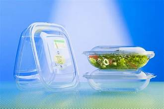
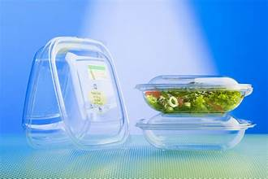
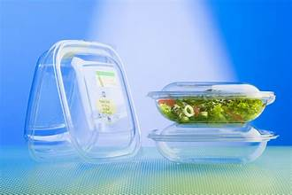

Bioplastics are plastic materials produced from renewable biomass sources, such as vegetable fats and oils, corn starch, straw, woodchips, sawdust, recycled food waste, etc. Some bioplastics are obtained by processing directly from natural biopolymers including polysaccharides (e.g., starch, cellulose, chitosan, and alginate) and proteins (e.g., soy protein, gluten, and gelatin), while others are chemically synthesized from sugar derivatives (e.g., lactic acid) and lipids (oils and fats) from either plants or animals, or biologically generated by fermentation of sugars or lipids. In contrast, common plastics, such as fossil-fuel plastics (also called petro-based polymers) are derived from petroleum or natural gas.
1. Renewable Feedstocks: Bioplastics are made from renewable feedstocks, such as corn, sugarcane, potato starch, and algae. This makes them a more sustainable option compared to traditional plastics, which rely on finite fossil fuel resources.
2. Reduced Greenhouse Gas Emissions: The production of bioplastics generally results in lower greenhouse gas emissions compared to the production of petroleum-based plastics, contributing to a reduction in carbon footprint.
3. Biodegradability: Some bioplastics are designed to be biodegradable under certain conditions, meaning they can break down into natural compounds over time, reducing the persistence of plastic waste in the environment.
4. Bio-Based and Biodegradable Varieties: There are two main categories of bioplastics:
-Bio-based Bioplastics: These are derived from renewable resources and are not necessarily biodegradable. They can be used in a wide range of applications, including packaging, automotive parts, and more.
-Biodegradable Bioplastics: These bioplastics are designed to break down in specific conditions, such as industrial composting or soil, and are often used in single-use items like disposable cutlery and bags.
5.Types of Bioplastics: Common types of bioplastics include:
-PLA (Polylactic Acid): PLA is a bio-based plastic made from fermented plant starch, primarily corn. It's often used in packaging, disposable tableware, and textiles.
-PHA (Polyhydroxyalkanoates): PHA is a family of biodegradable bioplastics produced by certain bacteria during fermentation. They have applications in medical devices and food packaging.
-Starch Blends: These bioplastics incorporate starch with other materials and are often used in packaging and agriculture.
6. Challenges: Despite their benefits, bioplastics also face challenges. These include cost, limited biodegradability in natural environments, and potential competition with food resources when derived from crops.
7. Regulations: Bioplastics are subject to regulations that ensure their safety, labeling, and claims of biodegradability. Regulations may vary by country.
8. R&D and Innovation: Ongoing research and development in bioplastics are focused on improving their properties, expanding their applications, and making them even more environmentally friendly.
9. Awareness: There is a growing awareness among consumers and businesses about the need for more sustainable packaging materials, which has driven the adoption of bioplastics.
Bioplastics play a crucial role in the effort to reduce the environmental impact of plastics and promote more sustainable alternatives. However, it's essential to select the appropriate type of bioplastic for specific applications and to ensure proper disposal and recycling practices to maximize their environmental benefits.

Benefits of Bioplastics
Plastic materials offer several benefits, which have made them widely used in various industries and applications. However, it's important to note that the environmental impact of plastic usage, particularly single-use plastics, has raised significant concerns. Here are some of the benefits of plastic:
1. Versatility: are highly versatile and can be molded into a wide range of shapes, sizes, and forms. This makes them suitable for a diverse array of applications, from packaging to automotive components.
2. Durability: Plastics are durable and resistant to moisture, chemicals, and environmental factors. They have a long lifespan, making them suitable for long-term use.
3. Lightweight: Plastics are typically lightweight, which is advantageous for transportation and reduces fuel consumption. This is particularly important in the automotive and aerospace industries.
4. Cost-Effective: Producing and manufacturing plastic products is often cost-effective compared to other materials like metal or glass. This affordability has contributed to the widespread use of plastics.
5. Properties: Some plastics have excellent insulation properties, which are valuable for electrical and construction applications.
6. Hygiene and Safety: Plastic packaging can help maintain the hygiene and safety of food and pharmaceutical products, protecting them from contamination.
7. Recyclability: Many plastics are recyclable, and recycling can help reduce the environmental impact associated with plastic waste.
8. Customizability: Plastics can be designed to meet specific requirements, such as being transparent, opaque, or colored.
9. Corrosion Resistance: Plastics are resistant to corrosion, which makes them suitable for various applications, especially in corrosive environments.
10. Energy Efficiency: The production of plastic materials can be energy-efficient compared to some other materials.
11. Medical Advancements: Plastics have played a critical role in medical advancements, such as in the production of medical devices, prosthetics, and packaging for pharmaceuticals.
12. Food Waste: Plastic packaging can help extend the shelf life of food products, reducing food waste.
13. Innovation: The use of plastics has driven innovation in various industries, including electronics, transportation, and consumer goods.
It's important to acknowledge that while plastics have many benefits, they also pose significant environmental challenges, such as pollution, microplastics, and their contribution to climate change. Therefore, there is a growing emphasis on reducing single-use plastics, increasing recycling rates, and developing more sustainable alternatives like bioplastics to mitigate these negative impacts.
Types of Bioplastics
There are several types of bioplastics, each with its unique properties and applications. Bioplastics are categorized based on their source material and whether they are biodegradable. Here are some common types of bioplastics:
1.Polylactic Acid (PLA)
- Source: PLA is made from fermented plant starch, typically derived from corn or sugarcane.
- Properties: PLA is biodegradable and compostable under industrial conditions. It has good transparency, stiffness, and is often used for packaging, disposable cutlery, and textiles.
- Applications: PLA is used in food packaging, 3D printing, and as a replacement for traditional plastics in various consumer products.
2.(PHA):
-Source: PHA bioplastics are produced by bacteria through the fermentation of sugar or lipids.
-Properties: PHA bioplastics are biodegradable, biocompatible, and have a wide range of mechanical properties. They can be tailored for various applications, such as medical devices, packaging, and agriculture.
3.Starch Blends:
-Source: Starch blends incorporate starch, often derived from corn or potatoes, with other biodegradable materials.
-Properties: These blends are biodegradable, have good barrier properties, and can be used in various applications, including packaging, disposable tableware, and agricultural films.
4.Polybutylene Succinate (PBS):
-Source: PBS is derived from succinic acid, which can be produced from renewable resources like corn.
-Properties: PBS is biodegradable and has good flexibility and strength. It is used in applications such as films, fibers, and injection-molded products.
5.(PE) and Polypropylene (PP) Derived from Sugarcane:
-Source: These plastics are chemically identical to traditional PE and PP but are produced from sugarcane ethanol, making them bio-based.
-Properties: They have the same properties as their petroleum-based counterparts, including durability and resistance to moisture and chemicals.
-Applications: Bio-based PE and PP are used in a variety of applications, including packaging, bottles, and automotive components.
6.Terephthalate (PET) Derived from Plant-Based Sources:
-Source: Bio-based PET is produced from plant-based sources, such as sugarcane.
-Properties: It has similar properties to traditional PET, including clarity, strength, and recyclability.
-Applications: Bio-based PET is used in beverage bottles and food packaging.
7.Polyglycolic Acid (PGA):
- Source: PGA is derived from glycolic acid, a naturally occurring compound.
-Properties: PGA is biodegradable, has good strength, and is often used in medical sutures and other medical applications.
8.Furanoate (PEF):
- Source: PEF is made from plant-based sources like sugars.
- Properties: PEF has similar properties to PET but is considered a more environmentally friendly alternative. It is also recyclable.
-Applications: PEF can be used in bottles and films for packaging.
9.Alcohol (PVA):
-Source: PVA is derived from renewable sources like corn or sugarcane.
-Properties: PVA is water-soluble and biodegradable. It is often used in single-use applications like water-soluble packaging and laundry bags.
These are just a few examples of the many types of bioplastics available. The choice of bioplastic depends on the specific requirements of the application, including biodegradability, mechanical properties, and cost considerations. As research and development in bioplastics continue to evolve, new types and blends of bioplastics are continually being developed to meet various environmental and industrial needs.
Applications of Bioplastics
Bioplastics are a type of plastic made from renewable biological sources, such as plants, and they offer several environmental advantages over traditional petroleum-based plastics. These biodegradable or biobased plastics have a wide range of applications across various industries. Some of the applications of bioplastics include:
1.Packaging: Bioplastics are commonly used in packaging materials, such as bags, films, and containers. They can help reduce the environmental impact of packaging waste and offer alternatives to single-use plastics.
2.Agriculture: Biodegradable mulch films made from bioplastics can be used in agriculture to reduce soil erosion, improve crop yield, and decrease the need for plastic removal after the growing season.
3.Food service products: Bioplastic cutlery, plates, and food containers are popular in the food service industry as they offer a more sustainable alternative to conventional single-use plastic items.
4.Textiles: Bioplastics can be used to make biodegradable textiles, including clothing, shoes, and accessories. These materials can help reduce the environmental footprint of the fashion industry.
5.Automotive: Bioplastics are used in the automotive industry for interior components, such as dashboard trim, door panels, and upholstery, to reduce the weight of vehicles and improve fuel efficiency.
6.Medical devices: Some bioplastics are used in medical applications, such as sutures, implantable devices, and drug delivery systems, due to their biocompatibility and biodegradability.
7.Electronics: Bioplastics can be used in the manufacturing of casings and components for electronic devices, reducing the environmental impact of electronic waste.
8.3D printing: Bioplastics are increasingly being used as feedstock for 3D printing, enabling the production of more sustainable and biodegradable 3D-printed objects.
9.Consumer goods: Bioplastics can be found in a wide range of consumer products, including toys, gardening tools, and household items.
10.Healthcare and pharmaceutical packaging: Biodegradable and biobased plastics are used in the packaging of pharmaceuticals and medical supplies, reducing the environmental impact of this industry.
11.Films and coatings: Bioplastics can be used as coatings for paper and cardboard packaging, extending their shelf life and improving their barrier properties.
12.Environmental applications: Biodegradable bioplastics can be used for applications like agricultural films and mesh that decompose and leave no plastic waste behind, reducing environmental pollution.
It's important to note that not all bioplastics are biodegradable, and their environmental benefits can vary depending on factors like production methods and disposal practices. Nevertheless, bioplastics offer a promising avenue for reducing our reliance on traditional petroleum-based plastics and mitigating their environmental impact.
Enviromental Impact
Materials such as starch, cellulose, wood, sugar and biomass are used as a substitute for fossil fuel resources to produce bioplastics; this makes the production of bioplastics a more sustainable activity compared to conventional plastic production.The environmental impact of bioplastics is often debated, as there are many different metrics for "greenness" (e.g., water use, energy use, deforestation, biodegradation, etc.). Hence bioplastic environmental impacts are categorized into nonrenewable energy use, climate change, eutrophication and acidification.Bioplastic production significantly reduces greenhouse gas emissions and decreases non-renewable energy consumption.Firms worldwide would also be able to increase the environmental sustainability of their products by using bioplastics
Although bioplastics save more nonrenewable energy than conventional plastics and emit less greenhouse gasses compared to conventional plastics, bioplastics also have negative environmental impacts such as eutrophication and acidification.Bioplastics induce higher eutrophication potentials than conventional plastics.Biomass production during industrial farming practices causes nitrate and phosphate to filtrate into water bodies; this causes eutrophication, the process in which a body of water gains excessive richness of nutrients.Eutrophication is a threat to water resources around the world since it causes harmful algal blooms that create oxygen dead zones, killing aquatic animals.Bioplastics also increase acidification.The high increase in eutrophication and acidification caused by bioplastics is also caused by using chemical fertilizer in the cultivation of renewable raw materials to produce bioplastics.
Other environmental impacts of bioplastics include exerting lower human and terrestrial ecotoxicity and carcinogenic potentials compared to conventional plastics. However, bioplastics exert higher aquatic ecotoxicity than conventional materials.Bioplastics and other bio-based materials increase stratospheric ozone depletion compared to conventional plastics; this is a result of nitrous oxide emissions during fertilizer application during industrial farming for biomass production.Artificial fertilizers increase nitrous oxide emissions especially when the crop does not need all the nitrogen.Minor environmental impacts of bioplastics include toxicity through using pesticides on the crops used to make bioplastics.Bioplastics also cause carbon dioxide emissions from harvesting vehicles.Other minor environmental impacts include high water consumption for biomass cultivation, soil erosion, soil carbon losses and loss of biodiversity, and they are mainly are a result of land use associated with bioplastics.Land use for bioplastics production leads to lost carbon sequestration and increases the carbon costs while diverting land from its existing uses
Although bioplastics are extremely advantageous because they reduce non-renewable consumption and GHG emissions, they also negatively affect the environment through land and water consumption, using pesticide and fertilizer, eutrophication and acidification; hence one's preference for either bioplastics or conventional plastics depends on what one considers the most important environmental impact.
Another issue with bioplastics, is that some bioplastics are made from the edible parts of crops. This makes the bioplastics compete with food production because the crops that produce bioplastics can also be used to feed people. These bioplastics are called "1st generation feedstock bioplastics". 2nd generation feedstock bioplastics use non-food crops (cellulosic feedstock) or waste materials from 1st generation feedstock (e.g. waste vegetable oil). Third generation feedstock bioplastics use algae as the feedstock.
Industry and Markets
While plastics based on organic materials were manufactured by chemical companies throughout the 20th century, the first company solely focused on bioplastics—Marlborough Biopolymers—was founded in 1983. However, Marlborough and other ventures that followed failed to find commercial success, with the first such company to secure long-term financial success being the Italian company Novamont, founded in 1989.
Bioplastics remain less than one percent of all plastics manufactured worldwide.Most bioplastics do not yet save more carbon emissions than are required to manufacture them.It is estimated that replacing 250 million tons of the plastic manufactured each year with bio-based plastics would require 100 million hectares of land, or 7 percent of the arable land on Earth. And when bioplastics reach the end of their life cycle, those designed to be compostable and marketed as biodegradable are often sent to landfills due to the lack of proper composting facilities or waste sorting, where they then release methane as they break down anaerobically.
COPA (Committee of Agricultural Organisation in the European Union) and COGEGA (General Committee for the Agricultural Cooperation in the European Union) have made an assessment of the potential of bioplastics in different sectors of the European economy:
Resources
Explore more about bioplastics with these helpful resources:
.jpg) 
